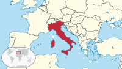

Nombre oficial: República Italiana Presidente: Sergio Mattarella Tendencia Capital: Roma Prefijo telefónico: +39 Población: 59.55 millones (2020) Banco Mundial Moneda: Euro Localización: Continente Europa Región: Europa del Sur Características geográficas: 1. Superficie 301 3401 km² 2. 294 140 km² (tierra) 3. 7 200 km² (agua) 4. Línea de costa 7 914 km Puntos extremos 1. Punto más bajo 0 m (Mar Mediterráneo) 2. Punto más alto 4 810 m (Mont Blanc)
La historia de Italia está íntimamente ligada a la de la cultura occidental y a la historia de Europa. Buena parte de los principales acontecimientos históricos del mundo occidental, así como muchos de los logros que han condicionado la cultura universal, han tenido lugar en el país o los han protagonizado sus pueblos.
Heredera de múltiples culturas antiguas, como la de los etruscos y de los latinos, receptora de la colonización griega y hogar de la Magna Grecia, fue cuna de la civilización romana y vio nacer la República y el Imperio romano, legador de gran parte de la cultura occidental y uno de los mayores de la historia, del cual Italia fue el centro absoluto, tanto político como económico y cultural.
Tras la caída del Imperio romano de Occidente, Italia sufrió una serie de invasiones germánicas, alternadas con intentos bizantinos y francos de reconstruir la unidad del Imperio romano. Roma, sede del papado y fuente de legitimidad imperial, fue en esos tiempos un foco que atrajo a figuras como Justiniano I y Carlomagno.
Durante la Edad Media, Italia se convertiría en un mosaico de Estados y ciudades-Estado (llamadas liberi comuni) a menudo en lucha entre sí para conseguir la hegemonía sobre el resto, con frecuentes intervenciones de las potencias circundantes y de la Santa Sede que, a través de la figura del papa en calidad de soberano, gobernaba buena parte del centro de Italia en el territorio conocido como Estados Pontificios, con capital en Roma.
La privilegiada situación geográfica de Italia hizo que esta fuera clave en el comercio continental y favoreció el florecimiento de ricas repúblicas marítimas conectadas con la historia europea y de todo el Mar Mediterráneo. La lucha entre el poder temporal imperial, que incluía a Italia, y el espiritual papal, que tenía su sede en Roma, tuvo en Italia especiales repercusiones políticas.
Esta herencia de relevancia política la convirtió en foco de las luchas por el poder en el continente europeo. Además, el legado cultural clásico y eclesiástico fue el caldo de cultivo de nuevas tendencias. En los siglos XV y XVI Italia se convirtió en el centro cultural de Europa, dando origen al Humanismo y al Renacimiento, y fue uno de los campos en los que se decidió la supremacía europea del Imperio español con la victoria sobre Francisco I de Francia.
Tras el declive de la Monarquía Hispánica, los Habsburgo de Austria pasarían a controlar la región, así como buena parte de Europa Central. Transformada en un campo de batalla durante las guerras revolucionarias francesas y el Primer Imperio de Napoleón Bonaparte, pasaría a luchar por su independencia. Entre 1848 y 1870 se llevó a cabo la Unificación de Italia, después de una serie de guerras que implicaron enfrentarse tanto al Imperio austríaco como a la soberanía papal sobre los Estados Pontificios y, a partir de las cuales, Italia se instituye como un único reino políticamente unificado bajo la dinastía real de los Saboya.
Posteriormente, el Reino de Italia, junto con las demás potencias europeas, llevaría a cabo políticas imperialistas que conformarían el Imperio italiano y que la llevaron a participar en la Primera Guerra Mundial del lado de la Entente, a desarrollar el fascismo de Benito Mussolini, a la invasión de Albania y Abisinia, y a participar en la Segunda Guerra Mundial con las Potencias del Eje junto a la Alemania Nazi y al Imperio del Japón. Después de la derrota en la Segunda Guerra Mundial, la monarquía sería derrocada y se instauró la actual república que tuvo una excelente recuperación, colocando a Italia entre las mayores economías desarrolladas y entre los países más industrializados del mundo.
En la actualidad Italia pertenece a importantes organizaciones internacionales, como el G-4, el G-7 y el G-20, así como a la Unión Europea, a la OTAN, al Quint y al OCDE.

Imprimir página: Imprimir
Refrescar página: Refrescar
Despedida: Despedida